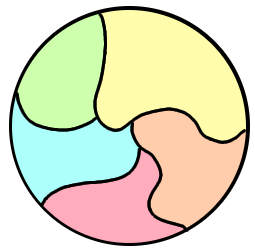
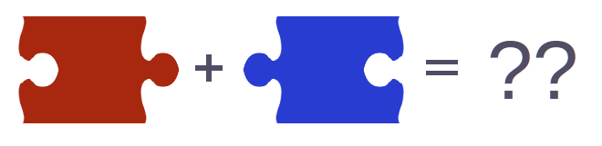
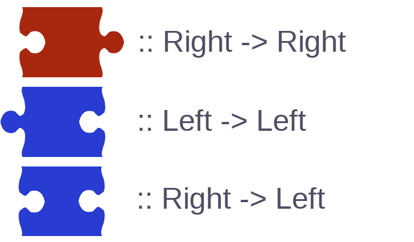
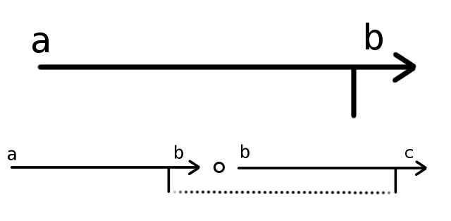
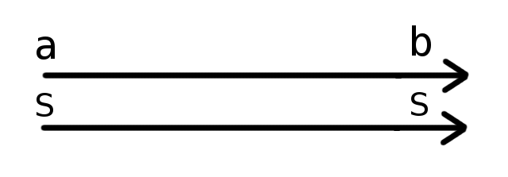
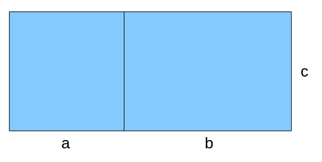

Algebraic Patterns
Philip Nilsson
 @ali_pang
@ali_pang
Why I like Haskell
- Immutability
- Strong static type-safety
- Well-behaved abstractions
Well-behaved abstractions?
- Simple
- Predictable
- Easy to reason about
This is very vague :(
Simplicity
Simple abstractions satisfies algebraic coherence conditions.
Equality
Implementing the == operator.
\[ = \thinspace\thinspace :: (X, X) \rightarrow Bool \]
IEEE 754
...
if (x == NaN) {
print("oops");
}
print(x);
>> NaN == NaN
false
Internet Explorer
>> window == document
true
>> document == window
false
Javascript
>> "" == 0
true
>> 0 == "0"
true
>> "" == "0"
false
Equivalence Relation
- $x = x$
- $x = y \implies y = x$
- $x = y \land y = z \implies x = z$
Equivalence Relation: Intuition
An equivalence relation splits a set of elements into partitions.
Equivalence Relation: Example
data ClockTime = ClockTime { hour :: Int }
ClockTime x == ClockTime y =
x % 12 == y % 12
Partitions
{ 0, 12, 24, ... }
{ 1, 13, 25, ... }
{ 2, 14, 26, ... }
Strategy
- Find example of surprising or complex behaviour.
- Write down algebraic law to prevent it.
- Develop intuition for meaning of algebraic law.
- Name the pattern.
- Code it.
Composition
Implementing the $\otimes$ operator.\[ \otimes :: (X, X) \rightarrow X \]
Composition
(+) :: (Int, Int) -> Int
(*) :: (Int, Int) -> Int
(++) :: (String, String) -> String
(∪) :: (Set, Set) -> Set -- set union
(∩) :: (Set, Set) -> Set -- set intersection
(.) :: (a -> a) -> (a -> a) -> (a -> a)
Composing multiple elements
type Compose a =
(a, a) -> a
⊗ :: Compose a
fold :: Compose a -> [a] -> a
fold [x,y,z,...] = x ⊗ y ⊗ z ⊗ ...
Problem: Not all folds are well-defined
(-) :: Compose Int
fold [1,2,3,4] = 1 - 2 - 3 - 4
= 1 - (2 - (3 - 4)) -- ??
= ((1 - 2) - 3) - 4 -- ??
= (1 - (2 - 3)) - 4 -- ??
= 1 - ((2 - 3) - 4) -- ??
Solution: Associativity
\[ x \otimes (y \otimes z) = (x \otimes y) \otimes z \]Associativity: Inuition
Subtraction is a type of difference not a type of composition.
Associativity: Inuition

Both evaluate to

Name it
A type $X$ and associative operator $\otimes :: (X, X) \rightarrow X$ is a called a Semigroup.Code it
Problem: How to fold an empty list
fold [] = ??
Solution: Provide a "default value"
fold [] = empty
fold (x:xs) = x <> fold xs
Problem
\[ fold [1,2,3] = 1 \otimes 2 \otimes 3 \otimes e \]Shouldn't it be $1 \otimes 2 \otimes 3$?
Solution: Algebra away the difference
Require that \[ x \otimes e = x = e \otimes x \]Intuition
Define composition by
Intuition
Name it
An element $e$ of a semigroup is called an Identity element if for all $x$ it satisfies. \[ e \otimes x = x \\ x \otimes e = x \]Name it
A semigroup with identity is called a Monoid.Code it
Theorem: There is only one identity element
Proof: Let $e$ and $f$ be two candidates for being identities. Have the "battle it out"
\[ e \otimes f = \thinspace ? \]Category Theory
Associativity and identity form the basis of a branch of mathematics called Category Theory
Problem: Not all elements compose
Solution: Introduce "types".
Objects & Morphisms
The types of a Category are called objects
The elements are called morphisms.
Morphisms compose just like elements of a Monoid, but the "types" must also match.
The identity morphism is called $id$.
Morphisms compose with $\circ$
Hask
Objects are Haskell types
Morphisms are Haskell functions with function composition.
A function with type $a \rightarrow b$ composes with a function of type $b \rightarrow c$ or $d \rightarrow a$
Monoid category
There is only a single type
Morphisms are the Monoid elements composing with $\otimes$
All elements compose
Matrices
Objects are numbers
Morphisms are matrices composing with matrix multiplication.
An $n \times m$ matrix can only compose with an $m \times k$ matrix or a $k \times n$.
Kleisli categories
Objects are types (in Hask)
Morphisms are a special kind of function (on the form $a \rightarrow f\thinspace b$)
Partial functions / Maybe monad
Stateful functions / State Monad
Code
Homomorphisms
Semigroups, Monoids, Groups, Categories etc add structure to a type.
Homomorphisms are structure preserving functions.
Preserving identity element
sum [] = 0
len [] = 0
$\exp(0) = 1$
$\log(1) = 0$
Preserving composition
sum (xs ++ ys) = sum xs + sum ys
len (xs ++ ys) = len xs * len ys
Preserving composition II
$\exp(x + y) = \exp(x) \times \exp(y)$
$\log(x \times y) = \log(x) + \log(y)$
Monoid homomorphisms
A Monoid homomorphism is a structure preserving map $h$ from one monoid to another such that.
\[ h(e) = e' \\ h(x \otimes y) = h(x) \bullet h(y) \]map (f . g) = map f . map g
filter (p <> q) = filter p . filter q
Intuition
 \[area :: (0,+) \rightarrow (0,+)\] \[ area(a + b) = area(a) + area(b) \]Mergesort
sort (xs ++ ys) = sort xs ⊗ sortBy ys
Stable sorts
sortBy (c ⊗ d) = sortBy c ∘ sortBy d
Theorem:
All folds from the list monoid are on the form
fold . map f
Inverse elements
\[ x \otimes x^{-1} = e \]Linear functions
 \[ f(-x) = -f(x) \]
\[ f(-x) = -f(x) \]
Exponential functions
 \[ log(\frac{1}{2}) = -log(2) \]
\[ log(\frac{1}{2}) = -log(2) \]
Linear Functions

Vector addition
 \[ f(u + v) = f(u) + f(v) \]
\[ f(u + v) = f(u) + f(v) \]
Compiling regular expressions

$compile(r \cdot q) = compile(r) \bullet compile(q)$
Compiling regular expressions

$compile(r | q) = compile(r) \cup compile(q)$
Functors
Homomorphisms on categories
\[ map(f \circ g) = map(f) \circ map(g) \]